gapminder %>%
filter(country == "India",
year > 1980) %>%
select(year, pop, lifeExp ) %>%
knitr::kable() # print in table format| year | pop | lifeExp |
|---|---|---|
| 1982 | 708000000 | 56.596 |
| 1987 | 788000000 | 58.553 |
| 1992 | 872000000 | 60.223 |
| 1997 | 959000000 | 61.765 |
| 2002 | 1034172547 | 62.879 |
| 2007 | 1110396331 | 64.698 |
Generate summary statistics by continent for gapminder
dataset
gapminder %>%
select(-country) %>% # drop country and year variable
tbl_summary()| Characteristic | N = 1,7041 |
|---|---|
| continent | |
| Africa | 624 (37%) |
| Americas | 300 (18%) |
| Asia | 396 (23%) |
| Europe | 360 (21%) |
| Oceania | 24 (1.4%) |
| year | 1,980 (1,966, 1,993) |
| lifeExp | 61 (48, 71) |
| pop | 7,023,596 (2,793,664, 19,585,222) |
| gdpPercap | 3,532 (1,202, 9,325) |
| 1 n (%); Median (IQR) | |
gapminder %>%
select(-country) %>% # drop country variable
tbl_summary(include = -year) # include everything but year| Characteristic | N = 1,7041 |
|---|---|
| continent | |
| Africa | 624 (37%) |
| Americas | 300 (18%) |
| Asia | 396 (23%) |
| Europe | 360 (21%) |
| Oceania | 24 (1.4%) |
| lifeExp | 61 (48, 71) |
| pop | 7,023,596 (2,793,664, 19,585,222) |
| gdpPercap | 3,532 (1,202, 9,325) |
| 1 n (%); Median (IQR) | |
gapminder %>%
select(-country) %>% # drop country variable
tbl_summary(include = c(continent, lifeExp, gdpPercap))| Characteristic | N = 1,7041 |
|---|---|
| continent | |
| Africa | 624 (37%) |
| Americas | 300 (18%) |
| Asia | 396 (23%) |
| Europe | 360 (21%) |
| Oceania | 24 (1.4%) |
| lifeExp | 61 (48, 71) |
| gdpPercap | 3,532 (1,202, 9,325) |
| 1 n (%); Median (IQR) | |
Format labels
gapminder %>%
select(-country, - year) %>% # drop country and year variable
tbl_summary() %>%
bold_labels()| Characteristic | N = 1,7041 |
|---|---|
| continent | |
| Africa | 624 (37%) |
| Americas | 300 (18%) |
| Asia | 396 (23%) |
| Europe | 360 (21%) |
| Oceania | 24 (1.4%) |
| lifeExp | 61 (48, 71) |
| pop | 7,023,596 (2,793,664, 19,585,222) |
| gdpPercap | 3,532 (1,202, 9,325) |
| 1 n (%); Median (IQR) | |
Save your table as .docx file
gapminder %>%
select(-country, - year) %>% # drop country and year variable
tbl_summary() %>%
as_flex_table() %>% # save table as Word file
save_as_docx(path = here("myfile.docx")) lm(lifeExp ~ pop, data = gapminder)##
## Call:
## lm(formula = lifeExp ~ pop, data = gapminder)
##
## Coefficients:
## (Intercept) pop
## 5.924e+01 7.904e-09Store model as object
my_model <- gapminder %>%
lm(lifeExp ~ year, data = .)
summary(my_model)##
## Call:
## lm(formula = lifeExp ~ year, data = .)
##
## Residuals:
## Min 1Q Median 3Q Max
## -39.949 -9.651 1.697 10.335 22.158
##
## Coefficients:
## Estimate Std. Error t value Pr(>|t|)
## (Intercept) -585.65219 32.31396 -18.12 <2e-16 ***
## year 0.32590 0.01632 19.96 <2e-16 ***
## ---
## Signif. codes: 0 '***' 0.001 '**' 0.01 '*' 0.05 '.' 0.1 ' ' 1
##
## Residual standard error: 11.63 on 1702 degrees of freedom
## Multiple R-squared: 0.1898, Adjusted R-squared: 0.1893
## F-statistic: 398.6 on 1 and 1702 DF, p-value: < 2.2e-16Make a model for Argentina and plot diagnostics
arg_model <- gapminder %>%
filter(country == "Argentina") %>%
lm(lifeExp ~ year, data = .)
plot(arg_model) # generates four diagnostic plots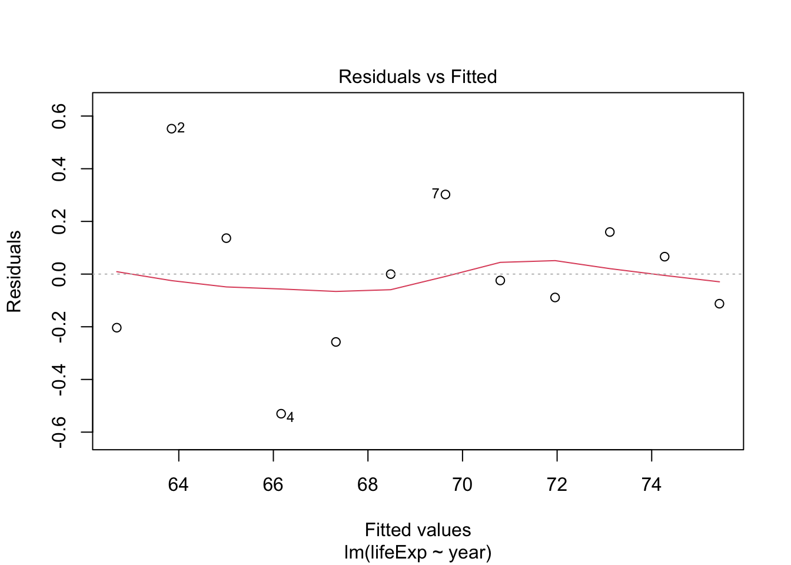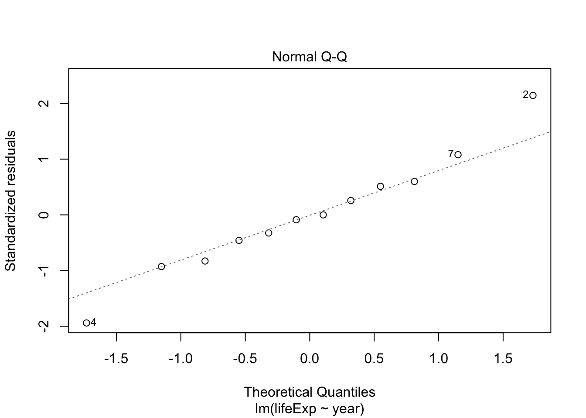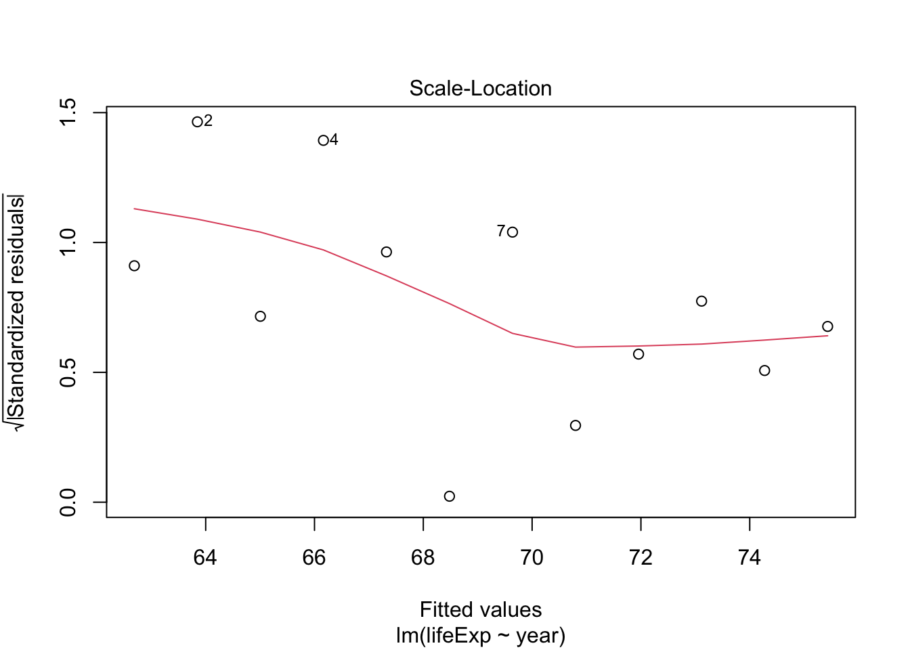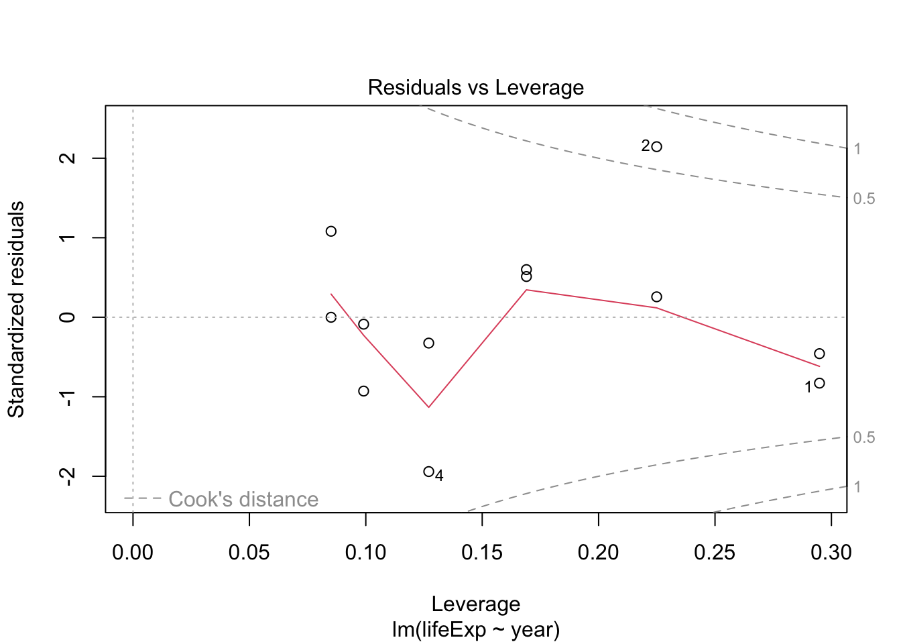
Try the same for Rwanda and compare
rwanda_model <- gapminder %>%
filter(country == "Rwanda") %>%
lm(lifeExp ~ year, data = .)
plot(rwanda_model) # generates four diagnostic plots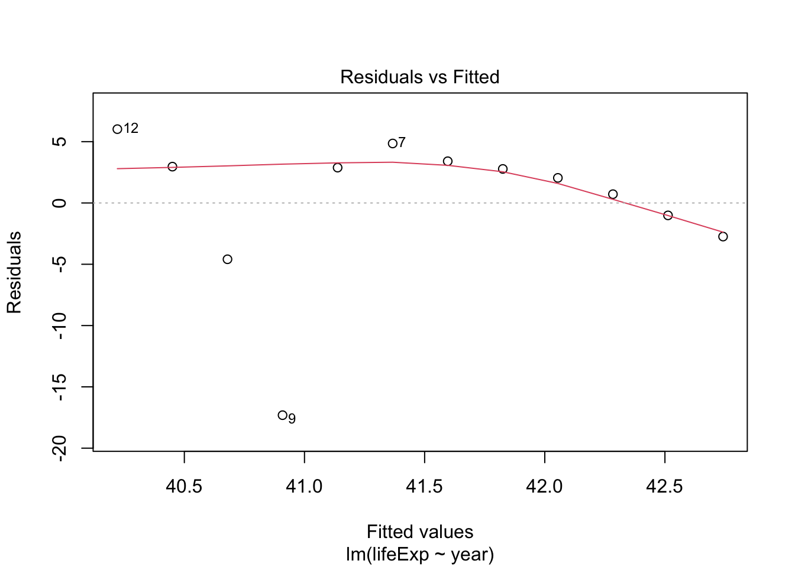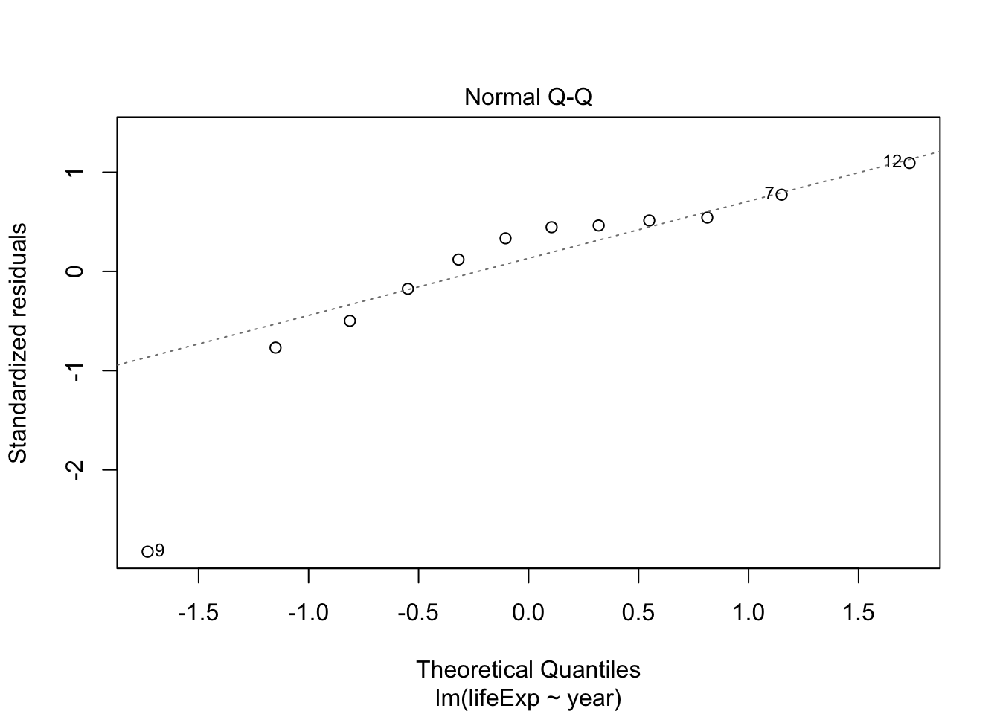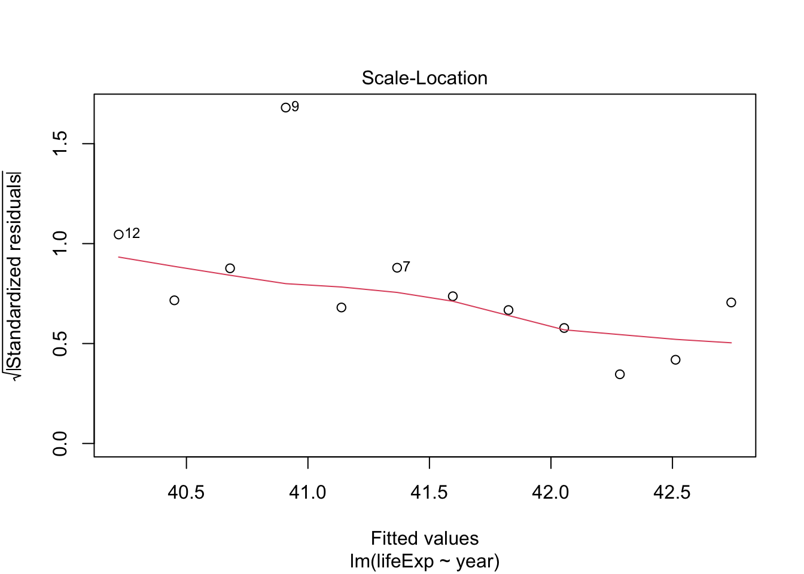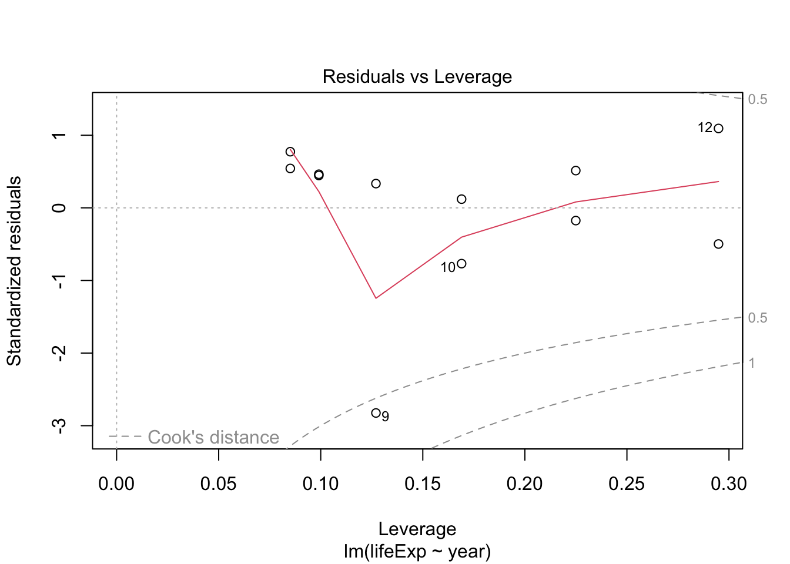
How does life expectancy change with time in each country?
gapminder %>%
ggplot(aes(x = year, y = lifeExp, group = country)) +
geom_line(alpha = 1/3)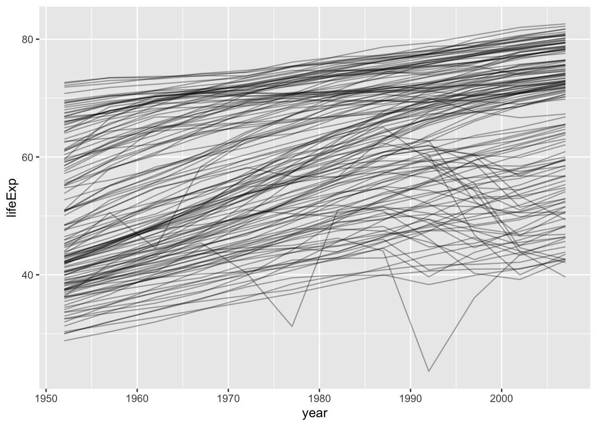
by_country_lm <- by_country %>%
mutate(model = map(data, ~lm(lifeExp ~ year1950, data = .)))# to each element of data column apply lm() function
by_country_lm## # A tibble: 142 × 4
## continent country data model
## <fct> <fct> <list<tibble[,5]>> <list>
## 1 Africa Algeria [12 × 5] <lm>
## 2 Africa Angola [12 × 5] <lm>
## 3 Africa Benin [12 × 5] <lm>
## 4 Africa Botswana [12 × 5] <lm>
## 5 Africa Burkina Faso [12 × 5] <lm>
## 6 Africa Burundi [12 × 5] <lm>
## 7 Africa Cameroon [12 × 5] <lm>
## 8 Africa Central African Republic [12 × 5] <lm>
## 9 Africa Chad [12 × 5] <lm>
## 10 Africa Comoros [12 × 5] <lm>
## # … with 132 more rowsby_country_lm %>%
filter(country=="India") %>%
unnest(data) %>%
ggplot(aes(x = year1950, y = lifeExp)) +
geom_line()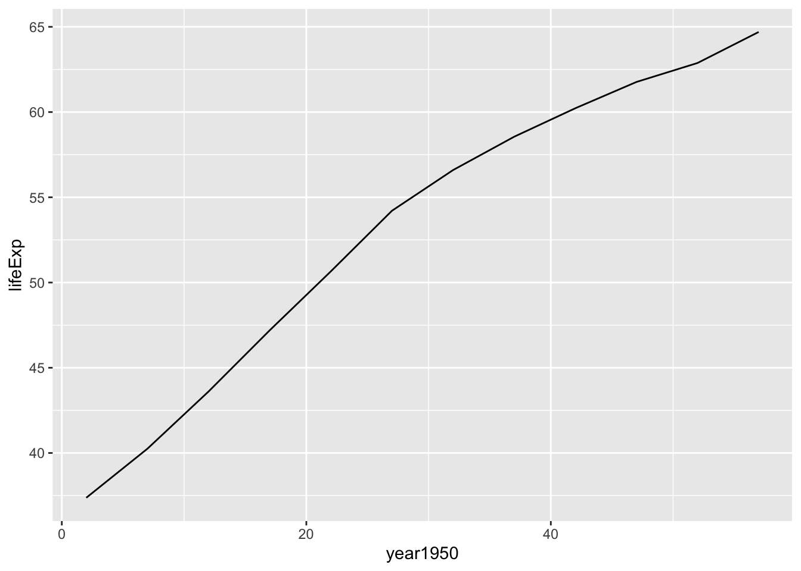
by_country_lm%>%
filter(country == "India") %>%
pluck("model", 1) %>%
summary()##
## Call:
## lm(formula = lifeExp ~ year1950, data = .)
##
## Residuals:
## Min 1Q Median 3Q Max
## -2.36441 -1.57472 0.04961 1.35537 2.30522
##
## Coefficients:
## Estimate Std. Error t value Pr(>|t|)
## (Intercept) 38.25911 0.98600 38.80 3.09e-12 ***
## year1950 0.50532 0.02885 17.52 7.81e-09 ***
## ---
## Signif. codes: 0 '***' 0.001 '**' 0.01 '*' 0.05 '.' 0.1 ' ' 1
##
## Residual standard error: 1.725 on 10 degrees of freedom
## Multiple R-squared: 0.9684, Adjusted R-squared: 0.9653
## F-statistic: 306.8 on 1 and 10 DF, p-value: 7.813e-09by_country_lm%>%
filter(country == "Rwanda") %>%
pluck("model", 1) %>%
summary()##
## Call:
## lm(formula = lifeExp ~ year1950, data = .)
##
## Residuals:
## Min 1Q Median 3Q Max
## -17.310 -1.445 2.410 3.073 6.021
##
## Coefficients:
## Estimate Std. Error t value Pr(>|t|)
## (Intercept) 42.83361 3.74890 11.426 4.63e-07 ***
## year1950 -0.04583 0.10969 -0.418 0.685
## ---
## Signif. codes: 0 '***' 0.001 '**' 0.01 '*' 0.05 '.' 0.1 ' ' 1
##
## Residual standard error: 6.558 on 10 degrees of freedom
## Multiple R-squared: 0.01716, Adjusted R-squared: -0.08112
## F-statistic: 0.1746 on 1 and 10 DF, p-value: 0.6849by_country_lm %>%
filter(country=="Rwanda") %>%
unnest(data) %>%
ggplot(aes(x = year1950, y = lifeExp)) +
geom_line()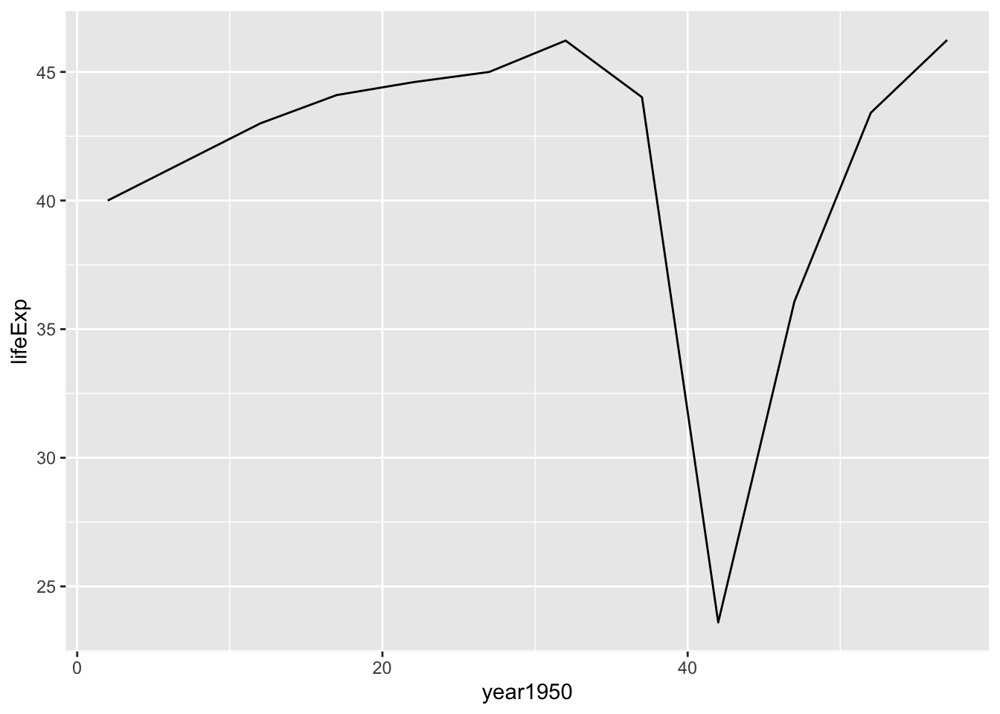
broomgm_models <- by_country_lm %>%
mutate(glance= map(model, glance),
tidy = map(model, tidy),
augment = map(model, augment),
rsq = map_dbl(glance, "r.squared"))
gm_models## # A tibble: 142 × 8
## continent country data model glance tidy augment rsq
## <fct> <fct> <list<t> <lis> <list> <list> <list> <dbl>
## 1 Africa Algeria [12 × 5] <lm> <tibble> <tibble> <tibble> 0.985
## 2 Africa Angola [12 × 5] <lm> <tibble> <tibble> <tibble> 0.888
## 3 Africa Benin [12 × 5] <lm> <tibble> <tibble> <tibble> 0.967
## 4 Africa Botswana [12 × 5] <lm> <tibble> <tibble> <tibble> 0.0340
## 5 Africa Burkina Faso [12 × 5] <lm> <tibble> <tibble> <tibble> 0.919
## 6 Africa Burundi [12 × 5] <lm> <tibble> <tibble> <tibble> 0.766
## 7 Africa Cameroon [12 × 5] <lm> <tibble> <tibble> <tibble> 0.680
## 8 Africa Central African R… [12 × 5] <lm> <tibble> <tibble> <tibble> 0.493
## 9 Africa Chad [12 × 5] <lm> <tibble> <tibble> <tibble> 0.872
## 10 Africa Comoros [12 × 5] <lm> <tibble> <tibble> <tibble> 0.997
## # … with 132 more rowsgm_models %>%
unnest(tidy) %>%
select(continent, country, rsq, term, estimate) %>%
pivot_wider(names_from = term, values_from = estimate) %>%
ggplot(aes(x = `(Intercept)`, y = year1950)) +
geom_point(aes(colour = continent, size = rsq)) +
geom_smooth(se = FALSE, method = "loess") +
scale_size_area() + labs(x = "Life expectancy (1950)", y = "Yearly improvement")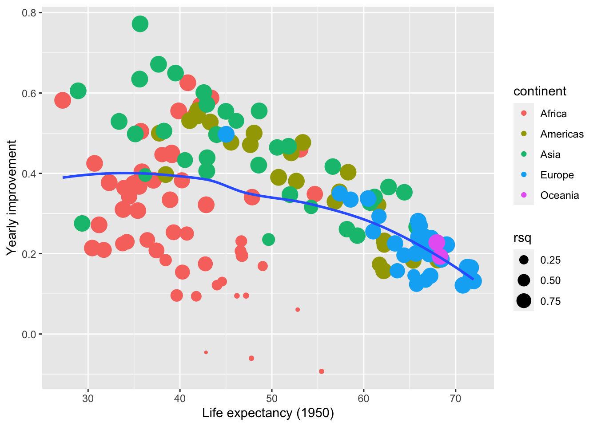